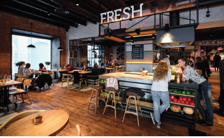
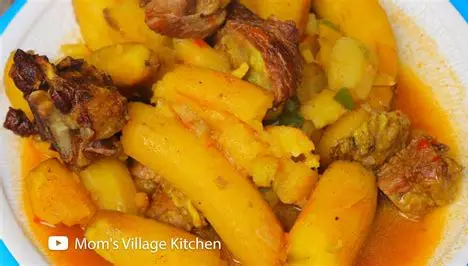
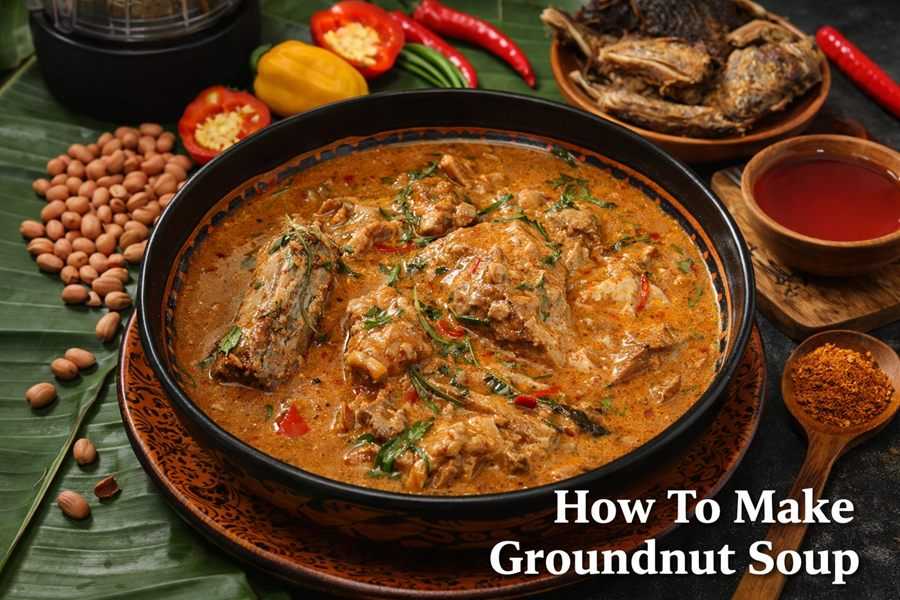

STREET-SIDE FAVORITE
Rolex
Egg and vegetables tucked into a warm chapati. A familiar, filling bite with plenty of room for personal twists.
Read the field noteA neighborhood food field guide
Come hungry for a little context. Follow familiar ingredients into the dishes, counters, and shared moments that make Ugandan food worth slowing down for.
FIELD NOTE 01 Start in Kansanga. Let your appetite lead.

A first bite
Everyday favorites, made for a longer look.
STREET-SIDE FAVORITE
Egg and vegetables tucked into a warm chapati. A familiar, filling bite with plenty of room for personal twists.
Read the field note
A TABLE CENTERPIECE
Green bananas gently steamed until tender, often served with a sauce or stew to bring the plate together.
Read the field note
RICH & COMFORTING
Peanut-rich sauce brings a deep, savory note to staples like matooke, sweet potato, or cassava.
Read the field note02 / OUT IN THE NEIGHBORHOOD
Find a helpful starting point for exploring casual counters, market produce, and the small discoveries that happen between them.
Explore around KansangaGO SLOW
ASK QUESTIONS
COME BACK HUNGRY